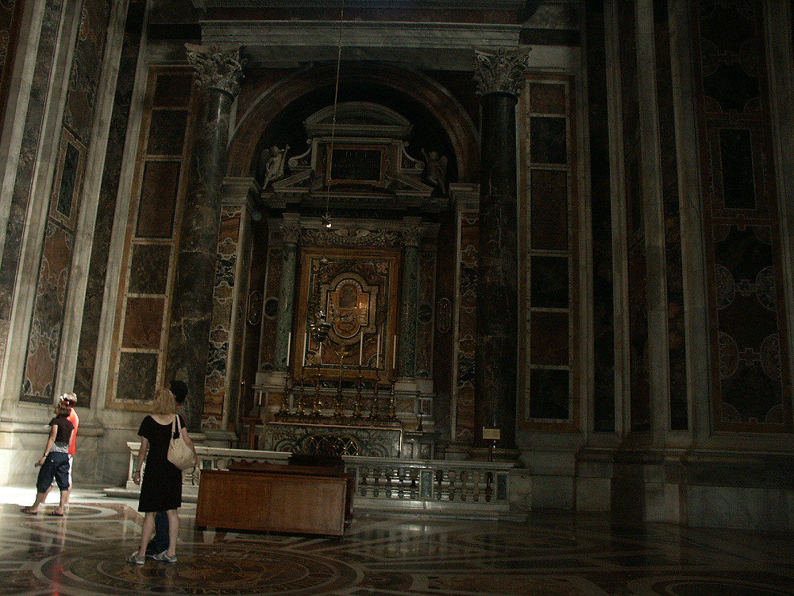

Johnnie and Oberta Baker's Photo Album Previous Gallery Next
|

The basilica extends over an area of 25,616 square meters; the outside perimeter is 1, 778 meters long. It has 44 altars, 11 domes, 778 columns, 395 statues and 135 mosaic pictures. The central nave is 187 meters long, 140 meters wide at the transept, 46 meters high. The dome rises 137 meters into the Roman sky. |